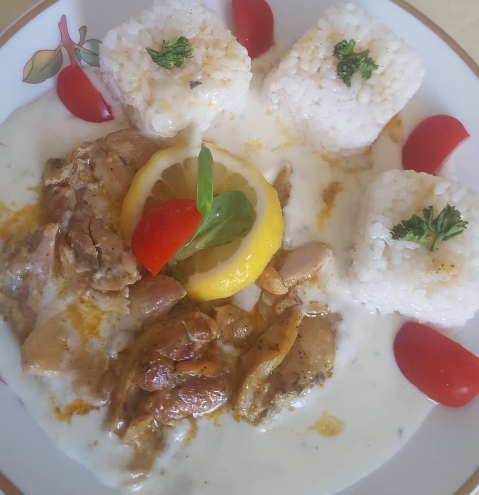

Dusená ryža podľa @matejikovarenata — Normy Jedál
Rychle, chutne, vydatne... Kuracie vykostene stehna na cesnaku s nivovou omackou a dusenou ryzou.
#kuracie #kuraciestehna #masonacesnaku #dusenaryza #nivovaomacka #fitjedlo #teplavecera
#teplyobed #domacastrava #laskakjedlu
#foodbloger #foodphotography